Presisi Semikonduktor dari Karawang untuk Dunia
PT Sharp Semiconductor Indonesia memproduksi Perangkat LED & Modul LED, Perangkat Opto, Dioda Laser, dan Regulator Tegangan — dirakit presisi tinggi dan bersertifikat ISO 9001, ISO 14001 & ISO 18001.
PT Sharp Semiconductor Indonesia memproduksi Perangkat LED & Modul LED, Perangkat Opto, Dioda Laser, dan Regulator Tegangan — dirakit presisi tinggi dan bersertifikat ISO 9001, ISO 14001 & ISO 18001.
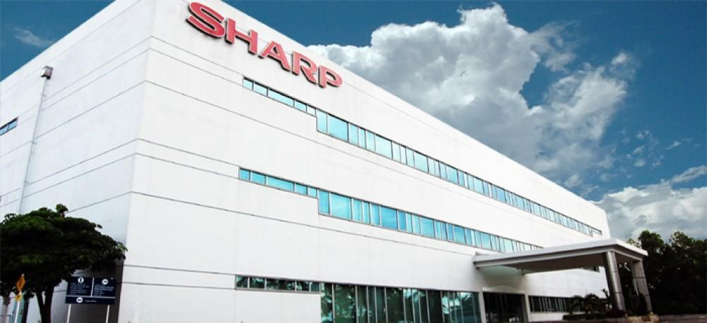
Inspeksi bertahap dilakukan pada setiap lini produksi
Teknologi inovatif untuk kesejahteraan manusia
Struktur organisasi jelas dengan koordinasi antar departemen beserta tugas
Komitmen jadwal pengiriman dan material berkualitas
PT Sharp Semiconductor Indonesia
PT Sharp Semiconductor Indonesia (SSI) berdiri pada 1995 sebagai bagian dari ekspansi global Sharp Corporation, berlokasi di Karawang International Industrial City (KIIC), Jawa Barat.
Bersama PT Sharp Electronics Indonesia (penyedia peralatan elektronik rumah tangga), SSI berfokus pada produksi komponen semikonduktor untuk beragam perangkat elektronik. Sejak 2013, produksi laser dikembangkan lebih intensif untuk memenuhi kebutuhan pasar global.
Sharp berawal dari Tokuji Hayakawa pada 1912 di Jepang — dari ikat pinggang tanpa lubang, pensil mekanik “Ever Ready Sharp Pencil” (1915), radio kristal (1925), hingga teknologi layar LCD.
Komponen Semikonduktor Berkualitas High-Precision
Berbagai jenis lampu LED dan modul LED untuk kebutuhan industri elektronik.
Tanya produkLaser tunggal dan laser rangka, komponen yang menghasilkan cahaya laser berpresisi tinggi.
Tanya produkPengatur tegangan untuk menjaga suplai daya perangkat elektronik tetap stabil.
Tanya produkStandar Kualitas & Sertifikasi Internasional
Standar Kualitas kami terletak pada komitmen pada mutu, lingkungan, serta kesehatan dan keselamatan kerja
Sistem manajemen mutu yang digunakan agar produk konsisten memenuhi persyaratan pelanggan dan peraturan yang berlaku, serta berkualitas.
Sistem manajemen lingkungan yang digunakan untuk mengelola dampak operasi, termasuk pengelolaan limbah secara tertib.
Sistem manajemen K3 yang digunakan untuk menciptakan lingkungan kerja yang aman bagi seluruh karyawan.
Fasilitas produksi terintegrasi di kawasan industri KIIC, didukung dengan adanya akses tol dan jalur logistik untuk distribusi ke berbagai wilayah.
Berdiri sebagai bagian dari ekspansi global Sharp Corporation ke kawasan Asia.
Area utama kegiatan industri di KIIC Lot F-3.
Mencakup bagian produksi, perkantoran, pergudangan, dan fasilitas penunjang lainnya.
Sistem kerja shift diterapkan untuk menjaga proses produksi berjalan sepanjang waktu dan tidak terjadi kelelahan kerja.
Bersertifikat ISO 9001, ISO 14001, dan ISO 18001 — mengenai mutu produk, kelestarian lingkungan, dan keselamatan kerja.
Keselamatan, Kesehatan Kerja & Limbah
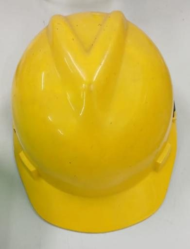
Pelindung kepala di area produksi dan gudang
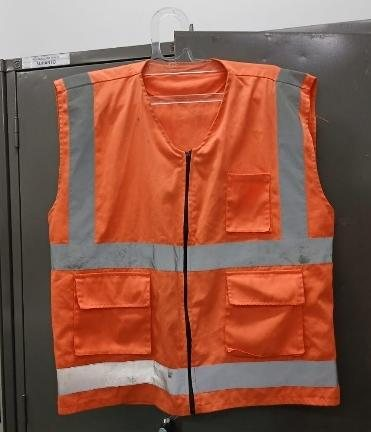
Visibilitas tinggi untuk area kerja
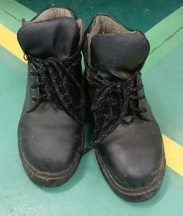
Pelindung kaki dari beban dan benda tajam
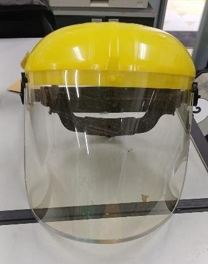
Pelindung wajah dari percikan
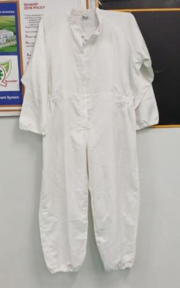
Pakaian bersih untuk area ruang bersih
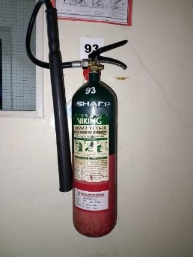
Alat pemadam api ringan jenis karbon dioksida
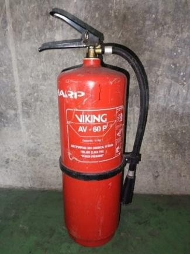
Alat pemadam api ringan jenis serbuk kimia
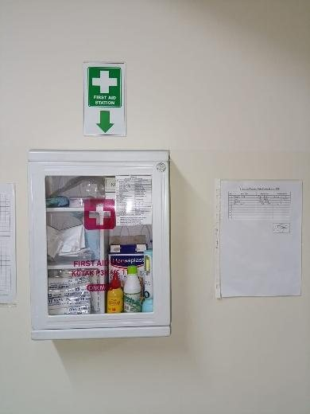
Pertolongan pertama pada kecelakaan kerja
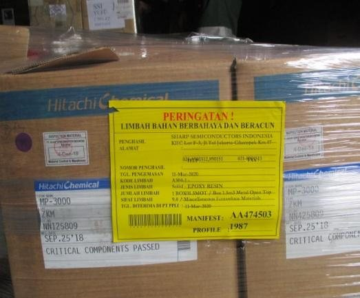
Penandaan kemasan limbah berbahaya
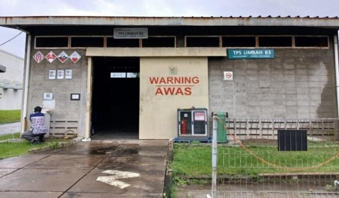
Tempat penyimpanan sementara limbah B3
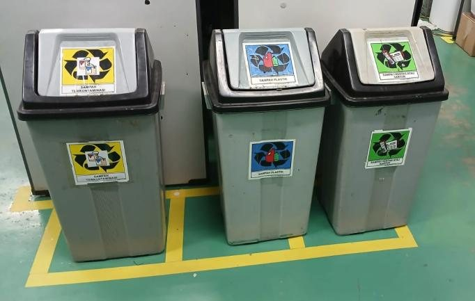
Pemilahan sampah berdasarkan jenis
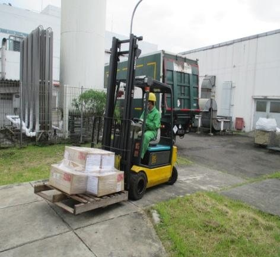
Palet limbah diangkat dengan truk garpu
Struktur Organisasi (efektif 1 Juli 2024)
Presisi, Mutu, dan Keselamatan
Produksi massal berdasarkan perencanaan permintaan, digunakan sebagai persediaan untuk memenuhi kebutuhan konsumen.
Mesin tersusun mengikuti urutan proses, dari pengikatan hingga pengemasan, dengan perpindahan material memakai baki khusus.
Teknologi Kendali Numerik Komputer (CNC) sebagai pengendali utama untuk presisi dan konsistensi tinggi pada produk.
Pengendalian mutu setelah pengikatan, pengikatan kawat, dan pengujian akhir sehingga cacat terdeteksi sejak awal.
Penggunaan APD, APAR, dan P3K sesuai prosedur dan disiplin untuk lingkungan kerja yang aman serta kondusif.
Lihat GaleriLimbah dikemas, diberi label, disimpan di TPS, lalu diangkut dan diverifikasi sesuai prosedur.
Lihat GaleriPertanyaan yang Sering Diajukan
Menjadi perusahaan yang berkontribusi terhadap peningkatan kualitas kehidupan masyarakat di seluruh dunia melalui pengembangan teknologi inovatif yang unik serta berorientasi pada kesejahteraan manusia.
(1) Mengembangkan dan memanfaatkan teknologi inovatif untuk meningkatkan kesejahteraan masyarakat; (2) mendorong pengembangan potensi karyawan serta peningkatan kualitas hidup; (3) mewujudkan kesejahteraan perusahaan yang selaras dengan kepuasan pelanggan, mitra bisnis, dan pemangku kepentingan; (4) menanamkan nilai kejujuran dan kreativitas; (5) membangun kerja sama yang harmonis serta menghadapi tantangan dengan sikap positif dan keberanian.
Menyediakan produk bermutu sesuai spesifikasi pelanggan dan peraturan; menaikkan tingkat kualitas melalui sasaran mutu; akurat memenuhi jadwal pengiriman dan pengadaan material berkualitas; merespons cepat keluhan kualitas; serta proaktif melakukan peningkatan dan inovasi di semua aktivitas.
Karawang International Industrial City (KIIC) Lot F-3, Jl. Tol Jakarta–Cikampek Km 47, Kec. Telukjambe Barat, Kab. Karawang, Jawa Barat. Peta lengkap tersedia di bagian Kontak.
Perusahaan bersertifikat ISO 9001 (manajemen mutu), ISO 14001 (manajemen lingkungan), dan ISO 18001 (kesehatan dan keselamatan kerja).
Membutuhkan Informasi? Hubungi Nomor yang Tersedia!